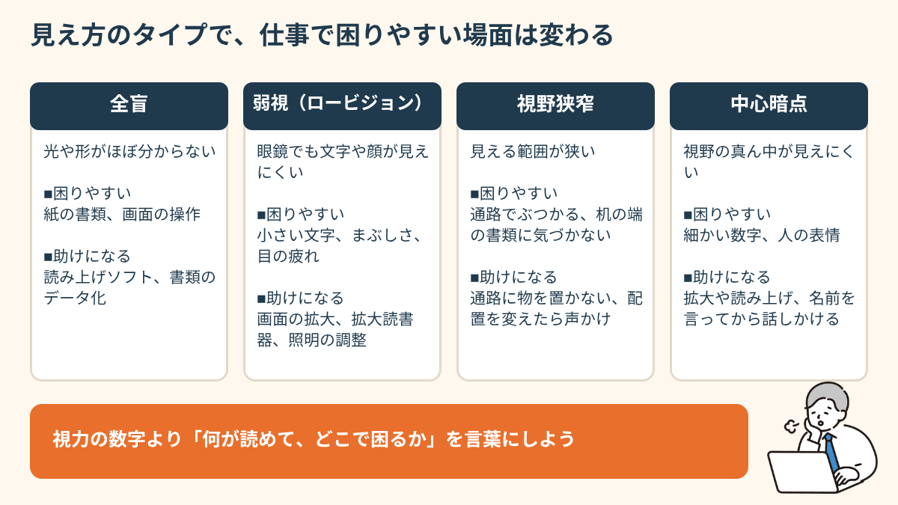
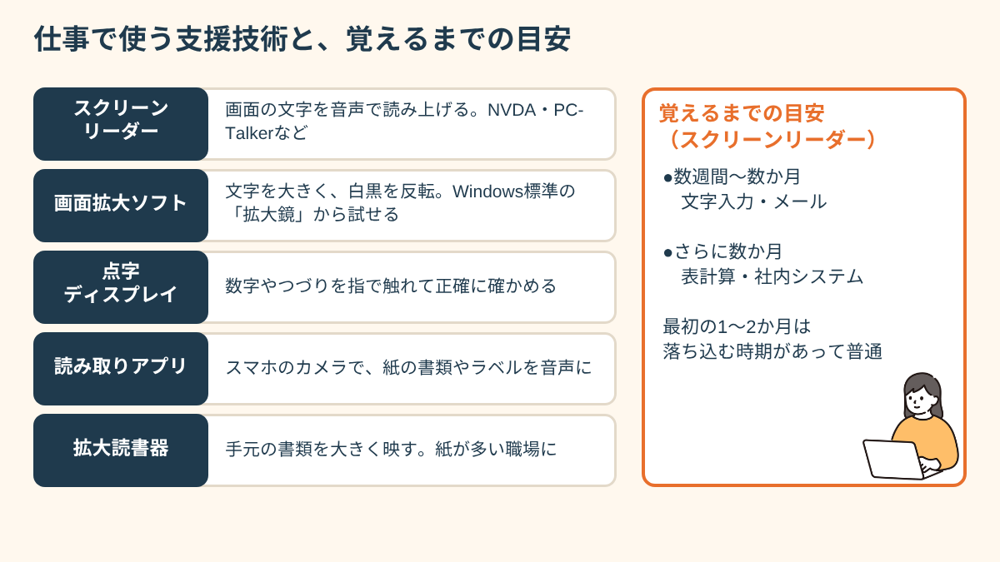
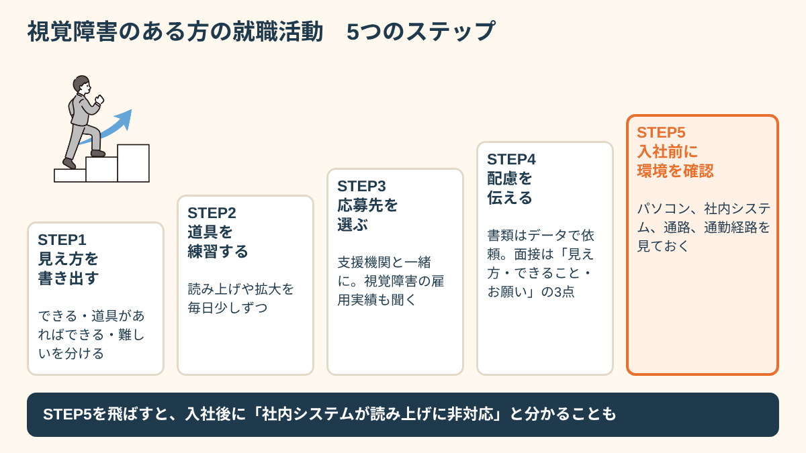
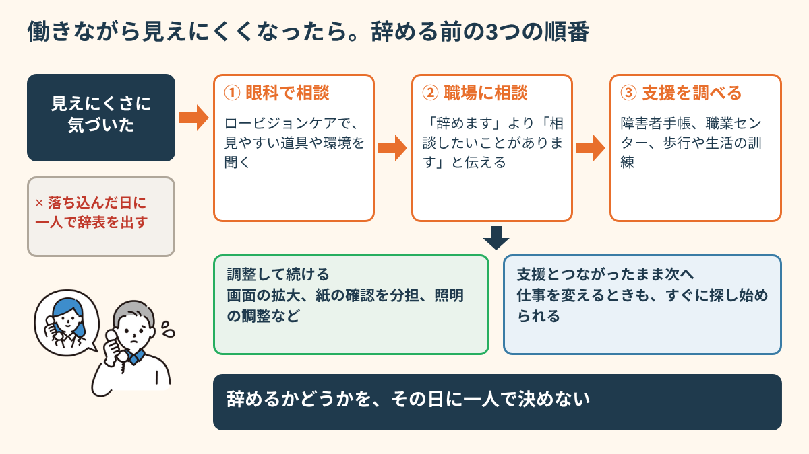
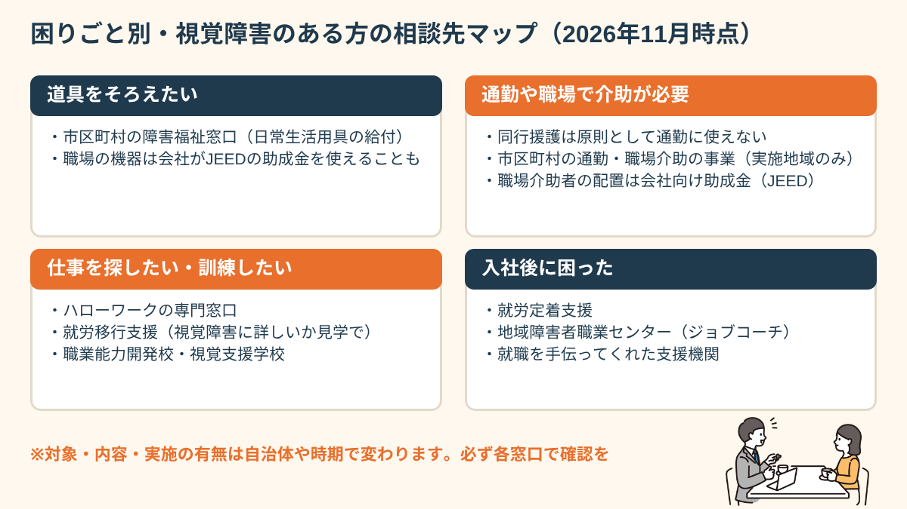

先にお伝えしたいのは、「見えないから働けない」と決まっているわけではない、ということです。見え方のタイプ、使える道具、職場の環境の組み合わせで、できる仕事は大きく変わります。この記事では、見え方別に困りやすい場面、仕事で使う支援技術と覚えるまでの目安、就職活動で頼める配慮、そして働いている途中で見えにくくなったときの順番と相談先まで、具体的に整理します（制度は2026年11月時点の情報です）。
見え方のタイプで、仕事で困る場面は変わる
「視覚障害」とひとことで言っても、見え方は人によってまったく違います。大きく分けると、光や形もほとんど分からない全盲、眼鏡をかけても文字や顔が見えにくい弱視（ロービジョン）、見える範囲が狭くなる視野狭窄、視野の真ん中だけが見えにくい中心暗点などがあります。網膜色素変性症のように、少しずつ進むことがある病気もあります。
仕事で困る場面も、タイプによって変わります。たとえば視野狭窄の方は、パソコンの文字は読めるのに、通路で人や段ボールにぶつかる、机の端に置かれた書類に気づかない、ということが起きやすくなります。中心暗点の方は、周りは見えているので歩くのは比較的平気でも、書類の細かい数字や人の表情が読み取りにくい、ということがあります。全盲の方は紙の書類や画面の操作に音声の道具が必要になる一方、慣れた職場の中なら一人で移動できる方も多くいます。
つまり、「視覚障害だからこの仕事は無理」と考えるより、「自分の見え方だと、どの場面で何があれば困らないか」を考えるほうが、仕事探しはずっと具体的になります。周りからは「どのくらい見えているの？」と聞かれることが多いですが、視力の数字よりも「何が読めて、何が読めないか」「どこで移動に困るか」を言葉にしておくほうが、職場にも伝わりやすくなります。

実際に視覚障害のある方が働いている仕事は幅広く、パソコンを使う事務（データ入力、経理、総務）、電話やチャットでの相談・受付、プログラミングやWebの検証（アクセシビリティのチェックなど）、文章作成や校正、あん摩マッサージ指圧・はり・きゅうの資格を生かした治療院や企業内のヘルスキーパー、音楽や音声に関わる仕事などがあります。ただし、どの仕事が合うかは見え方や経験、使える道具によって一人ひとり違います。
視覚障害のある人が仕事で使う支援技術と、覚えるまでの期間
視覚障害のある方の仕事を支える道具は、ここ十数年で大きく進みました。代表的なものを、見え方との相性と一緒に整理します。
- スクリーンリーダー：パソコンの画面の文字を音声で読み上げるソフト。Windowsでは無料のNVDAや、日本語環境でよく使われるPC-Talkerなどがあります。全盲の方や、画面を見続けると疲れる弱視の方に向いています。
- 画面拡大ソフト：文字やマウスポインターを大きくしたり、白黒を反転したりできます。Windowsの「拡大鏡」など標準機能から試せます。弱視の方の多くがまずここから始めます。
- 点字ディスプレイ：画面の文字をピンの凹凸で表示する機器。数字やつづりを正確に確かめたいときに役立ちます。
- スマートフォンの読み上げ機能やカメラで文字を読み取るアプリ：紙の書類、郵便物、商品のラベルなどを音声で確認できます。
- 拡大読書器：手元の書類をカメラで大きく映す機器。紙の資料が多い職場の弱視の方に向いています。
気になるのは「覚えるのにどのくらいかかるか」だと思います。個人差は大きいですが、スクリーンリーダーで文字入力やメールができるようになるまでに数週間から数か月、表計算や社内システムを仕事で使える速さになるまでには、さらに数か月かかることもあります。最初の1〜2か月は思うように操作できず、落ち込む時期があると知っておくだけでも、途中でやめずに済むことがあります。

「スクリーンリーダーを覚えるのに3か月くらいかかりました。最初はメール1通に30分かかって、何度も心が折れそうになりました。訓練の先生に『最初はみんなそうです』と言われて少し楽になりました。今は前の職場より複雑なデータ入力を任されています。周りには驚かれますが、慣れれば普通にできることなんです。」
道具は、自分で全部そろえる必要はありません。障害者手帳があれば、市区町村の「日常生活用具」の給付で、スクリーンリーダーや拡大読書器の購入費の一部が助成される場合があります（対象品目や上限額は自治体によって違います）。また、職場で使う機器は、会社が国の助成金を使って用意できる場合もあります。詳しくは後半の「通勤・職場で使える制度と相談先」で触れます。
就職活動の進め方。書類・面接で頼める配慮
視覚障害のある方の就職活動は、一人で求人サイトを眺めるより、支援機関と一緒に進めるほうが早いことが多いです。ハローワークの障害者専門窓口、障害者専門の転職エージェント、視覚支援学校（盲学校）の進路担当、視覚障害に詳しい就労移行支援事業所などが相談先になります。
進め方の目安は、次の5段階です。①自分の見え方と「できること・道具があればできること・難しいこと」を書き出す、②使える支援技術を練習しておく、③支援機関と応募先の候補を選ぶ、④書類と面接で配慮を伝える、⑤入社前に職場の環境（パソコン、社内システム、通路、通勤経路）を確認する。特に⑤を飛ばすと、入社してから「社内システムが読み上げに対応していなかった」と分かり、仕事が始められないことがあります。

書類や面接では、次のような配慮をお願いできます。応募書類や会社案内を紙ではなくWordやテキストのデータで送ってもらう、適性検査を音声や拡大文字で受けられるか相談する、面接会場までの道順を事前に教えてもらう、面接で見せる資料を口頭で説明してもらう、などです。
面接で伝える内容は、長く説明しなくて大丈夫です。たとえば「視野が狭いため、通路に物があるとぶつかりやすいです。画面は拡大ソフトを使えば、通常の事務作業ができます。紙の資料はデータでいただけると助かります」のように、「見え方」「道具があればできること」「お願いしたいこと」の3点をセットにすると、相手も働く姿を想像しやすくなります。
「紙の書類ばかりの会社だったときは本当に苦労しました。でも支援員さんが事前に『データで送ってもらえないか』と会社に聞いてくれて、それだけで負担が全然違いました。自分から言い出すのは勇気がいるので、間に入ってもらえたのはありがたかったです。」
エージェントの選び方は障害者向け転職エージェントの選び方、身体障害のある方の仕事探し全般は身体障害がある方の仕事探しでも整理しています。
職場でよくある不安と、同僚への頼み方
入社してからの不安で多いのは、「紙で回ってくる書類が読めない」「社内システムやPDFが読み上げに対応していない」「初めての場所に移動できない」「何度も頼むと迷惑だと思われそう」の4つです。
紙の書類やシステムについては、入社前の確認に加えて、困ったら早めに「この書類はデータでもらえますか」「このPDFは文字を選べる形で作れますか」と具体的に頼むのが近道です。読み上げられないPDF（画像として保存されたもの）は、作り方を少し変えるだけで読めるようになることがあります。移動については、最初の1〜2週間だけ同僚に案内してもらい、通路に物を置かない、机の配置を変えるときは声をかけてもらう、といったルールを決めておくと安心です。
頼むときの一言は、「すみません」から始めるより、内容と理由を短く伝えるほうがお互い楽です。たとえば「会議の資料、事前にデータでもらえると読み上げで確認できます」「後ろから声をかけるときは、名前を先に言ってもらえると誰か分かります」のような言い方です。
働いている途中で見えにくくなったとき、すぐに辞めないための順番
視覚障害は、生まれつきの方だけでなく、緑内障や網膜色素変性症、糖尿病網膜症などで、働いている途中から見えにくくなる方も多くいます。「パソコンの文字がぼやけてミスが増えた」「夕方になると見えにくくて、帰り道が怖い」「職場にどう言えばいいか分からず、迷惑をかける前に辞めたほうがいいのでは」。こうした悩みは、一人で抱えるほど「辞める」以外の選択肢が見えなくなりがちです。
見えにくさに気づいてから退職を考えるまでの流れは、たとえば次のようなものです。春ごろに書類の小さい字が読みにくくなり、夏には入力ミスを指摘されることが増える。秋には目の疲れで残業がつらくなり、自分を責めるようになる。冬に「もう迷惑はかけられない」と退職を申し出てしまう。けれど、辞める前に試せることは、実はたくさんあります。
①まず眼科で「ロービジョンケア」について相談する
見え方の変化は、まず眼科の主治医に伝えましょう。眼科によっては、残っている見え方を生かすための「ロービジョンケア」（拡大鏡や遮光眼鏡の選び方、見やすい環境の工夫などの相談）を行っています。日本眼科医会などが紹介している案内（スマートサイト）を使って、地域の相談先を教えてもらえる場合もあります。
②職場には「辞めます」の前に「相談したいことがあります」と伝える
上司や人事、産業医がいれば産業医に、「目の病気で見え方が変わってきていて、働き方を相談したい」と伝えます。画面の拡大、照明やモニターの調整、紙の書類をデータにする、運転や細かい目視の作業を別の業務に替える、といった調整で続けられることがあります。会社には、障害のある社員に対して、負担が重すぎない範囲で配慮（合理的配慮）を行う義務があります。
③障害者手帳と、在職中の支援を調べる
見え方の程度によっては、身体障害者手帳（視覚障害）の対象になることがあります。手帳があると、道具の給付や障害者雇用の枠での働き方など、使える支援が広がります。また、各都道府県の地域障害者職業センターでは、在職中の方の職場復帰や職場への助言を相談できることがあります。歩行や日常生活の訓練（白杖の使い方など）を受けられる機関もあります。

「緑内障が進んで、書類の数字を読み間違えるようになりました。もう辞めるしかないと思っていましたが、眼科でロービジョンの相談をして、会社にも正直に話したら、画面を大きくして、紙の確認作業をほかの人と分担する形になりました。あのとき一人で辞表を出さなくてよかったと思っています。」
もちろん、相談したうえで、今の仕事を続けるより別の仕事に移るほうが合うと分かることもあります。その場合も、在職中に支援機関とつながっておけば、次の仕事探しをすぐに始められます。大事なのは、辞めるかどうかを見え方が落ち込んだその日に一人で決めないことです。
通勤・職場で使える制度と相談先（2026年11月時点）
視覚障害のある方が働くときに関わる制度や相談先を、困りごと別にまとめます。制度の内容や対象は、お住まいの自治体や時期によって変わることがあるため、必ず各窓口で最新の情報を確認してください。
道具をそろえたいとき
身体障害者手帳がある方は、市区町村の障害福祉の窓口で「日常生活用具」の給付を相談できます。スクリーンリーダー、拡大読書器、点字ディスプレイなどが対象になっている自治体が多いですが、品目や上限額、自己負担は自治体ごとに違います。職場で使う機器については、会社が高齢・障害・求職者雇用支援機構（JEED）の助成金を使って用意できる場合があります。
通勤や職場での介助が必要なとき
外出の付き添いを受けられる「同行援護」は、原則として通勤や仕事中の移動には使えません。ただし、市区町村によっては、重度の障害のある方の通勤や職場での介助を支援する事業（雇用施策と福祉施策が連携した特別事業）を行っている場合があります。また、会社が職場で介助する人（文書を読み上げる人など）を配置する場合、JEEDの助成金の対象になることがあります。実施の有無はお住まいの市区町村や会社の状況で変わるため、窓口で確認してください。
仕事探しや訓練をしたいとき
- ハローワークの専門窓口：障害のある方向けの求人紹介や職業相談。視覚障害のある方への支援のポイントをまとめた資料を使って対応している窓口もあります。
- 就労移行支援事業所：通いながら、パソコン操作や就職活動の準備をする場所。視覚障害に詳しい事業所かどうかを見学で確かめるのがおすすめです。
- 障害者職業能力開発校など：視覚障害のある方向けのパソコンや事務のコースを設けている訓練校があります。
- 視覚支援学校（盲学校）：在校生だけでなく、卒業生や中途で見えにくくなった方の相談を受けている学校もあります。あん摩マッサージ指圧・はり・きゅうの資格取得の課程もあります。
- 地域障害者職業センター：職業評価や、職場への助言、ジョブコーチの支援を相談できます。
入社後に困ったとき
就職後に職場との調整が必要になったときは、就労定着支援や、就職を手伝ってくれた支援機関に相談できます。詳しくは就職後に困ったら就労定着支援で整理しています。
なお、会社に義務づけられている障害者の雇用の割合（法定雇用率）は、民間企業で2026年7月から2.7%に引き上げられています。障害者雇用の求人自体は増える流れにありますが、どの会社が視覚障害に慣れているかは求人票だけでは分かりません。「過去に視覚障害のある社員を雇ったことがあるか」「社内システムは読み上げに対応しているか」を、支援機関を通して聞いてもらうと、入社後のミスマッチを減らせます。
